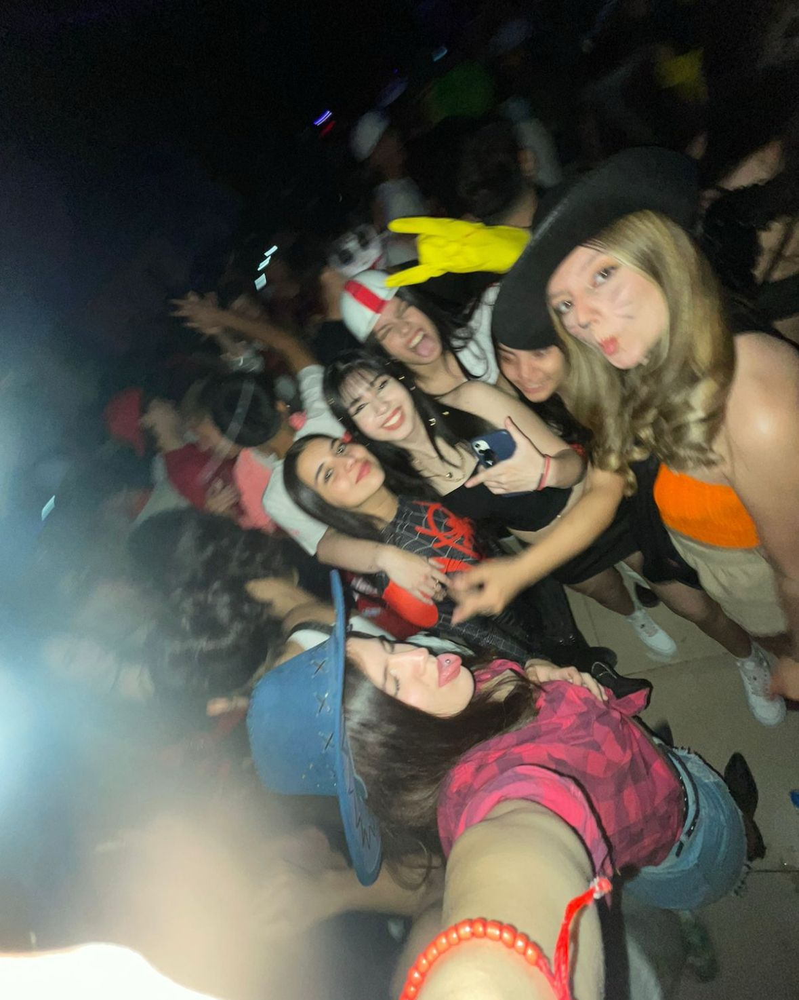

Sobre mi
Tyara Morena Perlwitz
- Tengo 17 años, para los 18 juju todo legal
- Nací el 10 de agosto de 2007
- Y soy del mejor signo o sea LEO
Nací y vivo en Neuquén con mi familia que está conformada por mis papás, mi hermano y mi hermana
Acerca de mi familia
Mi mamá, Veronica Andrada de 42 años
Mi papá, Damian Perlwitz de 44 años
Y mis hermanos Sol de 8 años y Santino de 12, mis peores pesadillas pero lo mas lindo que tengo
Mis estudios
Estudio en el colegio EPET 20, futura t√©cnica programadora si Dios quiere üôèüèºüôèüèº
Estudié diez años inglés y es un idioma que me apasiona mucho. Terminé de rendirlo ya hace dos años.
Mis metas y futuros estudios
Desde chica me intereso mucho el derecho y con la labia que manejo algo bueno tengo que sacar de ahi,
aparte por lo que me contaron es una carrera muy linda enla que se debe leer e interpretar mucho y ese es
justamente mi metodo de estudio asi que creo que mas alla de estudiar lo disfrutaria bastante y seria
una clara meta poder ser abogada algun dia.
Tambien pense en simultaneo estudiar alguna carrera que tenga que ver con la programacion ya que creo que
no estuve 6 años en vano en la epet 20.
Mi deporte favorito es el hockey y lo practiqué aproximadamente 8 años.
El último club en el que jugué fue en Neuquén Rugby Club.
Algunos de mis hobbies son
- Escuchar música
- Salir de joda y juntarme con amigos
- Cocinar (aunque lo hago bastante mal, pero lo que importa es el intento)
- Viajar
- Ir a conciertos
Acerca de mis hobbies
Me encanta la música y tengo un gusto bastante variado
Mi playlist
En mi playlist podés encontrar desde Romeo Santos y Ricardo Arjona a RKT o Taylor Swift (mi artista favorita)
La cual tuve la suerte de ver en el monumental hace ya casi dos años
El 11/11/2023 fue probablemente el mejor día de mi vida, ¡cómo te amo Taylor Swift!
Espero que mis futuros hijos sepan que ni su nacimiento me va a hacer tan feliz como el día que vi a Taylor
Otra cosa que me gusta hacer es ver series, viejas y de Cris Morena más que nada
Como Floricienta, Rebelde Way y Casi Ángeles
Mi favorita por el momento y la que estoy volviendo a ver es Floricienta
Un temón de Floricienta a continuación para bendecir oídos
Y así será - Floricienta
Juntarme con mis amigos
Algunos de mis favoritos son ellos:

Dos de mis mejores amigos, Hueche y Namuncura

Agos, mi mejor amiga desde que tengo uso de razón

Las chicas, un grupo muy lindo

Mis amigas del curso üôÉ

Mis chicos, el mejor grupo de amigos que pude haber tenido
Schiro y Mati, mis dos mejores amigos desde 2021 hasta que me muera, ya se condenaron
Soy alérgica a todo lo que camine, a continuación una listita
- Kiwi, mi kriptonita
- Banana, me asesina
- Morrón, menos mal que soy alérgica
- Té, una lástima porque me encanta
- Papa, pero no me importa, igual como
Mis comidas favoritas son
- Papas en todas sus formas (la alergia que lo mire por YouTube)
- Lasaña (la probé una sola vez pero era rica)
- Fideos con tuco, humildad presente
Redes Sociales
Mi instagram
Mi tiktok
Como contactarme
Mi whatsapp